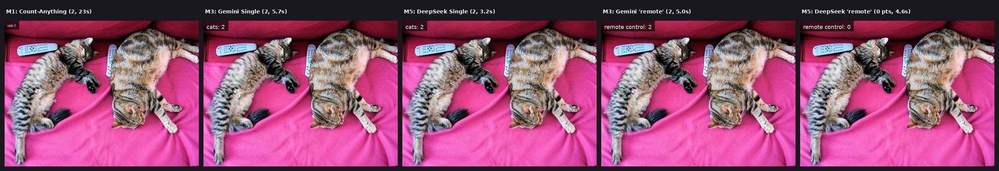
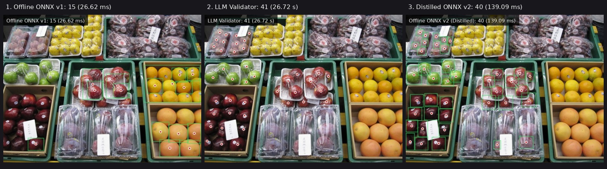
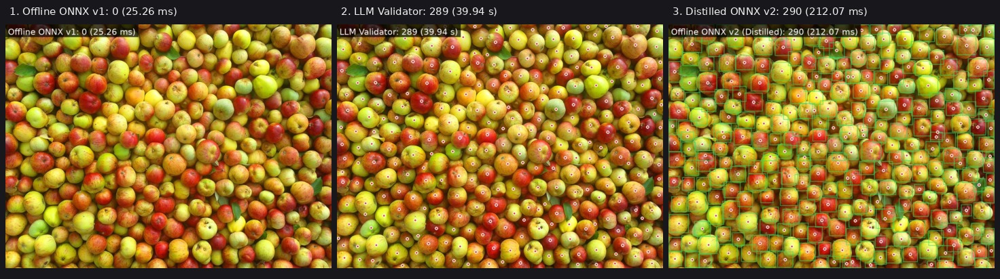
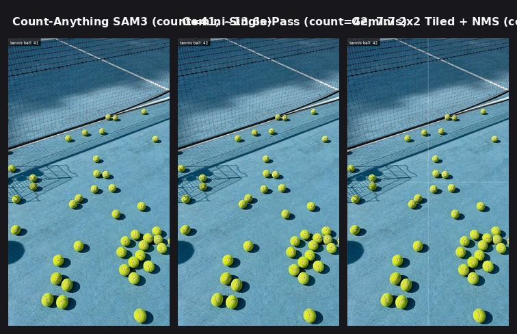
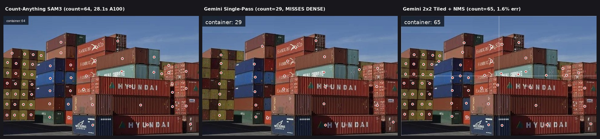
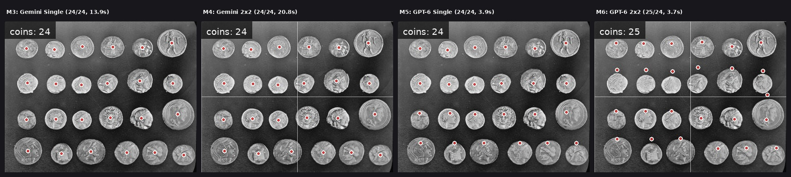
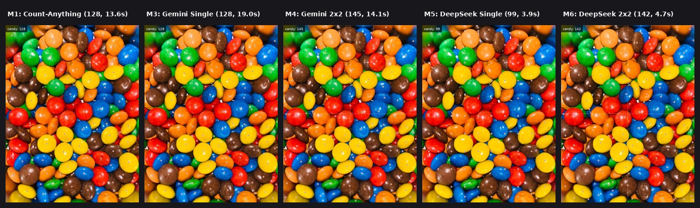
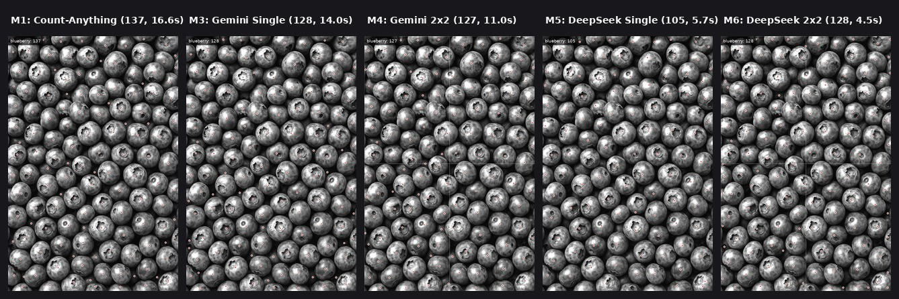

Evaluasi menyeluruh terhadap enam metode penghitungan benda berbasis kecerdasan buatan, mulai dari model segmentasi raksasa, model lokal ringan di dalam aplikasi, hingga model bahasa visual tunggal dan pembagian petak gambar.
Laporan ini disusun dengan bahasa yang mudah dipahami pembaca non-teknis maupun tim pengembang. Seluruh istilah asing dijelaskan secara sederhana di halaman Kamus Istilah pada bagian akhir.
AnyCount bertujuan memudahkan siapa saja menghitung jumlah benda cukup dengan memotretnya lalu mengetik nama benda yang ingin dihitung, misalnya mengetik kata "apple" pada foto tumpukan apel, kemudian menerima gambar balasan yang sudah ditandai titik merah di setiap benda beserta angka totalnya.
Menghitung jumlah barang secara manual dari tumpukan fisik adalah pekerjaan yang melelahkan, lambat, dan rawan salah. Di gudang logistik, pelabuhan kontainer, toko ritel, pertanian buah, hingga industri farmasi, pekerja sering kehilangan hitungan di tengah jalan ketika jumlah benda sudah melewati angka tiga puluh. Jika mereka memotret tumpukan tersebut, mereka tetap harus menandai foto itu satu per satu dengan jari di layar ponsel.
Proyek AnyCount hadir untuk menyelesaikan masalah tersebut. Alur impiannya sederhana: pengguna cukup mengarahkan kamera ke kumpulan benda, memotretnya, lalu mengetik kata benda yang ingin dihitung pada kolom pencarian (contohnya mengetik "apple", "container", "coins", atau "remote control"). Sistem kemudian menghitung jumlah benda yang cocok dan mengembalikan foto yang sudah diberi tanda titik merah berpinggir putih pada setiap benda yang dihitung.
Sebelum riset ini dimulai, terdapat tiga pendekatan awal yang masing-masing tampak memiliki jalan buntu tersendiri:
Hasil gambarnya bagus karena setiap benda ditandai titik merah. Namun ukuran otaknya sangat besar (3.4 GB), sulit dipasang di server murah, tidak mungkin dimasukkan ke ponsel, dan lambat tanpa kartu grafis mahal.
Ketika dicoba bertanya langsung ke AI seperti Gemini, angka tebakannya terasa akurat dan pintar memahami perintah teks apa saja. Sayangnya jawaban awalnya hanya berupa teks angka tanpa gambar penanda titik.
Hasil bedah aplikasi referensi CountThis 2.4.3 menunjukkan mereka hanya mendukung 9 kategori tetap dengan model deteksi biasa, sementara objek di luar daftar mengharuskan pengguna mengetuk contoh secara manual.
Riset ini dilakukan khusus pada tahap eksplorasi teknologi (sebelum masuk ke tahap penulisan kode aplikasi sesungguhnya) untuk menjawab empat pertanyaan mendasar secara terukur:
Agar seluruh isi laporan ini nyaman dibaca oleh siapa pun tanpa latar belakang ilmu komputer, halaman khusus ini menerjemahkan setiap istilah teknis yang muncul di dalam laporan ke dalam perumpamaan sehari-hari.
Program komputer yang sudah belajar mengenali pola dari jutaan contoh foto sehingga bisa menebak isi foto baru tanpa perlu diberi rumus kaku satu per satu.
Otak AI pintar di server cloud (seperti Gemini atau DeepSeek) yang sekaligus punya "mata" untuk melihat foto dan memahami perintah kalimat manusia dalam berbagai bahasa.
Kemampuan sistem mengenali benda apa saja sesuai ketikan bebas pengguna (misalnya "apel merah", "kucing tidur", "remot TV") tanpa dibatasi daftar pilihan menu yang kaku.
Cara AI menunjuk letak benda di dalam foto menggunakan dua angka posisi: jarak dari atas dan jarak dari kiri dalam skala 0 sampai 1000. Angka 500 dan 500 berarti tepat di tengah foto.
Garis kotak segi empat tidak terlihat yang membungkus satu buah benda dari tepi kiri, atas, kanan, hingga bawah untuk menandai ukuran benda tersebut.
Cara kerja di mana satu lembar foto dikirim utuh apa adanya ke AI dalam satu kali tanya, lalu AI langsung menyebutkan letak semua benda yang terlihat.
Cara kerja seperti memakai kaca pembesar: foto dipotong menjadi 4 bagian (kiri atas, kanan atas, kiri bawah, kanan bawah) dengan sedikit area tumpang tindih di tengah agar benda kecil terlihat dua kali lebih besar dan jelas oleh AI.
Saringan otomatis untuk mencegah satu benda dihitung dua kali. Saat foto dipotong menjadi 4 petak, benda yang kebetulan berada tepat di garis potong tengah bisa ditandai oleh petak kiri sekaligus petak kanan. NMS menggabungkan dua titik yang berdekatan itu menjadi satu titik saja.
ONNX adalah format file standar agar model AI bisa dijalankan di berbagai ponsel dan komputer tanpa internet. INT8 adalah teknik memadatkan angka di dalam otak AI sehingga ukuran filenya menyusut lebih dari tiga kali lipat (dari 10 MB menjadi sekitar 2.8 MB) dan berjalan sangat cepat.
File hasil akhir dari proses belajar AI. Saat pengguna ingin menghitung apel secara offline di aplikasi, yang diunduh ke ponsel bukanlah ribuan foto apel mentah, melainkan file bobot pintar berukuran 2.89 MB ini.
Pola kerja di mana AI besar yang pintar di server (Guru / Validator LLM) memeriksa foto sulit, lalu jawaban titik dari sang Guru dipakai secara otomatis untuk melatih model kecil di aplikasi (Murid / Offline ONNX) supaya sang Murid ikut menjadi pintar.
Ground Truth adalah jumlah benda sebenarnya jika dihitung teliti oleh mata manusia. MAPE adalah rata-rata persentase melesetnya hitungan AI dibandingkan jumlah sebenarnya. Semakin kecil angka persen MAPE (mendekati 0%), semakin akurat metode tersebut.
False Positive terjadi saat AI menaruh titik merah di tempat kosong atau bukan benda yang dicari (misalnya pantulan mangkuk dikira permen). False Negative terjadi saat ada benda asli yang lupa ditandai oleh AI.
Latensi adalah lamanya pengguna menunggu sejak tombol hitung ditekan sampai gambar hasil muncul (dalam milidetik atau detik). GPU adalah kartu pemroses grafis khusus AI yang biaya sewanya mahal. Token adalah satuan potongan data gambar dan teks yang menjadi dasar perhitungan biaya pemakaian layanan AI cloud.
Pada awal riset muncul anggapan bahwa memakai LLM seperti Gemini hanya bisa menghasilkan teks angka, tidak bisa mengeluarkan gambar penuh titik merah seperti hasil Count-Anything. Setelah kami memeriksa langsung kode sumber count_anything/inference.py di server eksperimen, terungkap fakta penting: model Count-Anything pun sebenarnya tidak pernah menghasilkan file gambar secara langsung.
Model Count-Anything hanya mengeluarkan daftar angka posisi titik tengah benda dalam format data teks JSON, contohnya [{"x": 165.7, "y": 263.8}, {"x": 492.1, "y": 196.9}]. Setelah daftar koordinat itu keluar, sebuah fungsi kecil bernama _render() sepanjang 25 baris memakai pustaka gambar Pillow untuk melukis lingkaran merah bergaris tepi putih di atas foto asli dan menempelkan kotak label hitam transparan di pojok kiri atas.
| Metode | Mesin AI Utama | Lokasi Kerja | Beban Ukuran | Ciri Khas Utama |
|---|---|---|---|---|
| Metode 1 Count-Anything |
SAM3 (848 Juta parameter) | Server GPU / CPU besar | File 3.4 GB (RAM 7.2 GB) |
Segmentasi bentuk benda secara detail, namun sangat berat untuk di-hosting sendiri. |
| Metode 2 Offline + Validasi LLM |
YOLO11n INT8 + Guru Gemini | Di Aplikasi HP + Validasi Cloud | 2.89 MB per objek | Unduh bobot sesuai objek yang dibutuhkan, hitung instan 0.14 detik tanpa internet. |
| Metode 3 Gemini Foto Utuh |
gemini-3.8-flash-high | Cloud API (1x kirim) | 0 MB di aplikasi | Paling akurat menunjuk titik pada foto jarak dekat 1 sampai 130 benda sekaligus. |
| Metode 4 Gemini Petak 2x2 |
gemini-3.8-flash-high | Cloud API (4 petak paralel) | 0 MB di aplikasi | Sangat tajam untuk foto jarak jauh (kontainer) dan foto gelap tanpa warna. |
| Metode 5 DeepSeek Foto Utuh |
deepseek-v4.1-flash-1017 | Cloud API (1x kirim) | 0 MB di aplikasi | Sangat cepat (3 sampai 5 detik) untuk benda berjumlah sedikit hingga sedang. |
| Metode 6 DeepSeek Petak 2x2 |
deepseek-v4.1-flash-1017 | Cloud API (4 petak paralel) | 0 MB di aplikasi | Metode cloud paling cepat (rata-rata 3.79 detik) untuk foto padat ratusan benda. |

Count-Anything adalah model riset akademik karya Mengqi Lei dan rekan-rekan yang dibangun di atas pondasi SAM3 (Segment Anything Model generasi ke-3) dengan total 848 juta parameter (23 juta parameter cabang penghitung aktif). Berbeda dengan model deteksi kotak biasa, Count-Anything bekerja melalui tahapan berikut:
Kami menguji Metode 1 pada dua lingkungan berbeda. Di Google Colab menggunakan kartu grafis kelas server NVIDIA A100 40 GB, proses satu foto kontainer memakan waktu total 28.1 detik (termasuk persiapan sub-proses) dan menghasilkan 64 titik kontainer yang rapi. Ketika kami memindahkan model ini ke VPS tanpa kartu grafis (6 vCPU, 14 GB RAM), kami harus melakukan enam tambalan kode khusus agar model tidak gagal karena ketiadaan CUDA dan memakai teknik pemetaan memori (mmap=True). Di CPU VPS, model memakan puncak RAM 7.2 GB dengan waktu rata-rata 13.6 hingga 23.0 detik per foto.
| Gambar Uji | Kata Kunci | Jumlah Asli (GT) | Hasil Metode 1 | Selisih | Meleset (MAPE) | Catatan Pemeriksaan Visual |
|---|---|---|---|---|---|---|
| cats.jpg | cats | 2 | 2 | 0 | 0.0% | Titik tepat di badan kedua kucing (23.0 detik di CPU). |
| containers.jpg | container | 64 | 64 | 0 | 0.0% | Menjadi acuan referensi tumpukan kontainer (28.1 detik A100). |
| tennis-ball.jpg | tennis ball | 43 | 41 | -2 | 4.7% | Melewatkan 2 irisan bola yang terpotong di tepi kiri dan kanan. |
| candy-ball.jpg | candy | 132 | 128 | -4 | 3.0% | Sangat presisi pada permen warna warni yang bertumpuk. |
| candy-bnw.jpg | candy | 132 | 123 | -9 | 6.8% | Muncul 3 salah tanda (false positive) di bibir pantulan mangkuk. |
| Heidelbeeren.jpg | blueberry | 113 | 125 | +12 | 10.6% | Sedikit berlebih pada buah di lapisan sela bawah. |
| Heidelbeeren-bnw.jpg | blueberry | 113 | 131 | +18 | 15.9% | Tanpa warna, bayangan cekungan mulai ikut dihitung buah. |
| Heidelbeeren-bnw2.jpg | blueberry | 113 | 137 | +24 | 21.2% | Kontras tinggi membuat celah bayangan gelap salah dihitung. |
Metode 2 dirancang untuk menjawab kebutuhan efisiensi biaya jangka panjang sekaligus kecepatan instan di ponsel pengguna. Jika kita menaruh seluruh otak AI raksasa ke dalam aplikasi ponsel, ukuran aplikasi akan membengkak bergiga-giga byte. Sebaliknya, jika aplikasi dikosongkan dan hanya mengunduh paket bobot model kecil (.onnx) sesuai benda yang ingin dihitung pengguna, ukuran aplikasi tetap sangat ramping.
Penting untuk diluruskan bagi pembaca awam: ketika pengguna mengetik "apple", yang diunduh aplikasi dari server kita bukanlah ribuan foto apel mentah, melainkan file bobot hasil latihan (apple_v2_distilled_int8.onnx) yang ukurannya hanya 2.89 MB (setara satu buah foto kamera ponsel).
Kami mempraktikkan seluruh siklus ini secara nyata di VPS pada objek apel. Model awal (versi 1) hanya dilatih sekilas (5 putaran pada ukuran gambar kecil 320 piksel dari data mentah COCO) sehingga hasilnya masih sangat buruk. Setelah diperiksa oleh Validator LLM Gemini, titik jawaban LLM diubah menjadi kotak latihan multi-skala (foto penuh ditambah potongan petak 2x2) lalu dipakai melatih ulang model versi 2 selama 35 putaran (epoch) pada ukuran 640 piksel. Hasil peningkatannya sangat mencolok:
| Sampel Foto Apel | Model Offline v1 (Sebelum Dilatih LLM) |
Validator LLM (Guru Acuan) |
Model Offline v2 (Sesudah Dilatih LLM) |
Selisih v2 vs LLM | Waktu Hitung Offline v2 |
|---|---|---|---|---|---|
| apple_val_1.jpg Keranjang apel sedang |
7 apel (meleset 69.6%) |
23 apel (17.58 detik) |
24 apel | 4.3% (+1) | 0.14 detik (143 ms) 122x lebih cepat |
| apple_val_2.jpg Tumpukan apel pasar |
15 apel (meleset 63.4%) |
41 apel (26.72 detik) |
40 apel | 2.4% (-1) | 0.14 detik (139 ms) 192x lebih cepat |
| apples.jpg Tumpukan ratusan apel |
0 apel (meleset 100%) |
289 apel (39.94 detik) |
290 apel (mode petak 2x2 lokal) |
0.3% (+1) | 0.21 detik (212 ms) 188x lebih cepat |


Metode 3 memanfaatkan kemampuan penunjukan ruang bawaan dari model Gemini 3.8 Flash (gemini-3.8-flash-high). Foto dikirim satu kali dalam keadaan utuh bersama kalimat instruksi agar model memindai gambar baris demi baris dari kiri atas ke kanan bawah, lalu mengembalikan daftar posisi titik tengah [y, x] dalam skala 0 sampai 1000.
Selama eksperimen kami menemukan satu pengaturan teknis yang wajib dipasang pada model ini: kita harus membatasi panjang pikiran internalnya (reasoning_effort: "low" dan max_tokens: 4096) serta melarang model menuliskan daftar koordinat di dalam ruang berpikir internalnya. Tanpa pembatasan tersebut, model bisa menghabiskan lebih dari dua menit hanya untuk merenungkan benda di pinggir gambar sebelum menjawab. Dengan pengaturan yang tepat, waktu jawabnya turun ke kisaran 5 hingga 19 detik.
| Gambar Uji | Kata Kunci | Jumlah Asli (GT) | Hasil Metode 3 | Meleset (MAPE) | Waktu Tunggu | Keterangan Kualitas Titik |
|---|---|---|---|---|---|---|
| cats.jpg | cats | 2 | 2 | 0.0% | 5.71 detik | Sempurna tepat di tengah badan kedua kucing. |
| cats.jpg | remote control | 2 | 2 | 0.0% | 5.03 detik | Langsung pindah menandai 2 remot TV tanpa salah. |
| coins.jpg | coins | 24 | 24 | 0.0% | 13.93 detik | 24 titik tepat di 24 koin, nol salah tanda. |
| tennis-ball.jpg | tennis ball | 43 | 42 | 2.3% | 7.71 detik | Mengalahkan Count-Anything (41); hanya lewat 1 irisan tipis. |
| candy-ball.jpg | candy | 132 | 128 | 3.0% | 19.02 detik | Sama persis dengan Count-Anything (128), nol titik ganda. |
| candy-bnw.jpg | candy | 132 | 116 | 12.1% | 12.49 detik | Nol salah tanda di mangkuk, tapi lewat 12 permen gelap tepi. |
| Heidelbeeren.jpg | blueberry | 113 | 122 | 8.0% | 12.39 detik | Lebih dekat ke jumlah asli dibanding Count-Anything (125). |
| Heidelbeeren-bnw.jpg | blueberry | 113 | 112 | 0.9% | 12.10 detik | Sangat stabil walau warna buah dihilangkan. |
| Heidelbeeren-bnw2.jpg | blueberry | 113 | 128 | 13.3% | 13.99 detik | Mulai sedikit bergeser pada bagian bawah kontras tinggi. |
| containers.jpg | container | 64 | 29 | 54.7% | 6.04 detik | Gagal: pintu kontainer jauh terlalu sempit pada 1x kirim. |
| apples.jpg | apples | 215 | 289 | 34.4% | 39.94 detik | Lambat karena menulis 289 koordinat berurutan sendirian. |

Pada foto containers.jpg yang berisi 64 kontainer di pelabuhan, Metode 3 (foto utuh) hanya sanggup menemukan 29 kontainer. Pemeriksaan visual menunjukkan tiga kolom tumpukan kontainer di sisi paling kiri (sebanyak 21 kontainer yang hanya terlihat pintu belakangnya yang sempit) terlewat seluruhnya karena ukurannya terlalu mungil ketika dilihat dari jauh.
Metode 4 mengatasi masalah ini dengan cara kerja empat langkah:
| Gambar Uji (Petak 2x2) | Jumlah Asli (GT) | Titik Mentah (4 Petak) | Sesudah Hapus Kembar | Meleset (MAPE) | Waktu Tunggu |
|---|---|---|---|---|---|
| coins.jpg (koin) | 24 | 25 | 24 | 0.0% | 20.78 detik |
| containers.jpg (kontainer) | 64 | 71 | 65 | 1.6% | 31.53 detik |
| tennis-ball.jpg (bola tenis) | 43 | 43 | 42 | 2.3% | 10.67 detik |
| Heidelbeeren.jpg (warna) | 113 | 139 | 122 | 8.0% | 11.34 detik |
| Heidelbeeren-bnw.jpg (hitam putih) | 113 | 133 | 119 | 5.3% | 11.48 detik |
| Heidelbeeren-bnw2.jpg (kontras tinggi) | 113 | 144 | 127 | 12.4% | 10.98 detik |
| candy-ball.jpg (permen warna) | 132 | 164 | 145 | 9.8% | 14.06 detik |
| candy-bnw.jpg (permen hitam putih) | 132 | 163 | 144 | 9.1% | 12.84 detik |
| apples.jpg (ratusan apel) | 215 (CA: 339) | 370 | 336 | setara CA | 21.09 detik* |

Pada putaran eksperimen sebelumnya kami sempat menguji model gpt-6-luna-xhigh. Walaupun cepat pada objek sedikit, model tersebut mengalami masalah serius saat menghitung gambar menengah seperti lapangan tenis (tennis-ball.jpg): dari 43 bola asli, ia menebarkan 83 titik di mana lebih dari lima puluh titik jatuh melayang di lapangan biru yang kosong. Oleh karena itu, Metode 5 dan Metode 6 dialihkan ke model DeepSeek V4.1 Flash (deepseek-v4.1-flash-1017).
Pengujian awal mengungkap karakter unik DeepSeek V4.1 Flash yang berbeda dari Gemini:
| Gambar Uji | Kata Kunci | GT | Hasil Metode 5 | Meleset (MAPE) | Waktu | Catatan Pemeriksaan Visual |
|---|---|---|---|---|---|---|
| cats.jpg | cats | 2 | 2 | 0.0% | 3.20 detik | Kedua titik mendarat tepat di badan masing-masing kucing. |
| cats.jpg | remote control | 2 | 0 | 100.0% | 4.60 detik | Menjawab teks angka "2" saja tanpa daftar koordinat. |
| coins.jpg | coins | 24 | 24 | 0.0% | 3.13 detik | 24 titik tepat di atas 24 koin dalam 3.1 detik! |
| tennis-ball.jpg | tennis ball | 43 | 40 | 7.0% | 3.91 detik | Semua 40 titik mendarat tepat di bola (tidak bocor ke lapangan). |
| containers.jpg | container | 64 | 69 | 7.8% | 2.92 detik | Angka dekat, tapi kontainer depan ditandai 4 titik berjejer. |
| Heidelbeeren.jpg | blueberry | 113 | 124 | 9.7% | 4.10 detik | Jumlah akurat, sebagian titik tersusun membentuk pola baris. |
| Heidelbeeren-bnw.jpg | blueberry | 113 | 99 | 12.4% | 5.12 detik | Sedikit kurang hitung pada area gelap. |
| Heidelbeeren-bnw2.jpg | blueberry | 113 | 105 | 7.1% | 5.70 detik | Tidak tertipu bayangan kontras tinggi (lebih baik dari CA 137). |
| candy-ball.jpg | candy | 132 | 99 | 25.0% | 3.88 detik | Berhenti lebih awal pada tumpukan warna rapat. |
| candy-bnw.jpg | candy | 132 | 132 | 0.0%* | 5.27 detik | Angka pas 132, namun posisi titik berpola barisan kisi. |
| apples.jpg | apples | 215 | 825 | 283.7% | 16.50 detik | Terjebak pengulangan koordinat (loop) pada ratusan apel. |
Pada Metode 5 (foto utuh), DeepSeek sempat mengalami pengulangan koordinat tanpa henti pada foto ratusan apel (apples.jpg = 825 titik) karena kewalahan menulis ratusan titik dalam satu tarikan napas. Begitu kita memotong gambar menjadi 4 petak paralel (Metode 6), jumlah benda di dalam setiap petak turun menjadi porsi kecil yang sangat nyaman bagi DeepSeek.
Hasilnya luar biasa: penyakit pengulangan koordinat pada apples.jpg hilang seratus persen (dari 825 turun menjadi 336 titik bersih, sama persis dengan angka Metode 4 Gemini 2x2 yaitu 336 titik), namun selesai hanya dalam 5.60 detik! Secara keseluruhan, Metode 6 mencatat rata-rata waktu tunggu 3.79 detik per gambar, menjadikannya metode cloud paling cepat di seluruh eksperimen ini.
| Gambar Uji (Petak 2x2) | GT | Titik Mentah | Hasil Akhir Metode 6 | Meleset (MAPE) | Waktu Tunggu |
|---|---|---|---|---|---|
| coins.jpg (koin) | 24 | 25 | 25 | 4.2% | 2.83 detik |
| containers.jpg (kontainer) | 64 | 63 | 61 | 4.7% | 2.47 detik |
| tennis-ball.jpg (bola tenis) | 43 | 41 | 40 | 7.0% | 3.45 detik |
| Heidelbeeren.jpg (warna) | 113 | 135 | 121 | 7.1% | 3.10 detik |
| Heidelbeeren-bnw.jpg (hitam putih) | 113 | 136 | 121 | 7.1% | 3.88 detik |
| Heidelbeeren-bnw2.jpg (kontras tinggi) | 113 | 142 | 128 | 13.3% | 4.45 detik |
| candy-ball.jpg (permen warna) | 132 | 162 | 142 | 7.6% | 4.70 detik |
| candy-bnw.jpg (permen hitam putih) | 132 | 152 | 133 | 0.8% | 3.64 detik |
| apples.jpg (ratusan apel) | 215 (CA: 339) | 364 | 336 | setara CA | 5.60 detik |

Tabel di bawah merangkum angka terukur dari seluruh skenario gambar yang diuji agar kekuatan dan kelemahan setiap metode dapat dilihat dalam satu pandangan:
| Gambar Uji (GT) | M1: Count-Anything | M2: Offline ONNX v2 | M3: Gemini Utuh | M4: Gemini 2x2 | M5: DeepSeek Utuh | M6: DeepSeek 2x2 |
|---|---|---|---|---|---|---|
| cats.jpg (2 kucing) | 2 (23.0s) | Khusus objek terlatih | 2 (5.7s) | Tidak perlu 2x2 | 2 (3.2s) | Tidak perlu 2x2 |
| cats.jpg (2 remot) | Belum diuji | Khusus objek terlatih | 2 (5.0s) | Tidak perlu 2x2 | 0 titik (4.6s) | Tidak perlu 2x2 |
| coins.jpg (24 koin) | Belum diuji | Khusus objek terlatih | 24 (13.9s) | 24 (20.8s) | 24 (3.1s) | 25 (2.8s) |
| tennis-ball.jpg (43 bola) | 41 (13.6s) | Khusus objek terlatih | 42 (7.7s) | 42 (10.7s) | 40 (3.9s) | 40 (3.5s) |
| containers.jpg (64 unit) | 64 (28.1s) | Khusus objek terlatih | 29 (Gagal) | 65 (31.5s) | 69 (2.9s) | 61 (2.5s) |
| Heidelbeeren.jpg (~113) | 125 (13.6s) | Khusus objek terlatih | 122 (12.4s) | 122 (11.3s) | 124 (4.1s) | 121 (3.1s) |
| Heidelbeeren-bnw (~113) | 131 (13.6s) | Khusus objek terlatih | 112 (12.1s) | 119 (11.5s) | 99 (5.1s) | 121 (3.9s) |
| Heidelbeeren-bnw2 (~113) | 137 (16.6s) | Khusus objek terlatih | 128 (14.0s) | 127 (11.0s) | 105 (5.7s) | 128 (4.5s) |
| candy-ball.jpg (~132) | 128 (13.6s) | Khusus objek terlatih | 128 (19.0s) | 145 (14.1s) | 99 (3.9s) | 142 (4.7s) |
| candy-bnw.jpg (~132) | 123 (16.6s) | Khusus objek terlatih | 116 (12.5s) | 144 (12.8s) | 132 (5.3s) | 133 (3.6s) |
| apple_val_1.jpg (23 apel) | Tidak diuji | 24 (0.14s) | 23 (17.6s) | Tidak perlu 2x2 | Tidak diuji | Tidak diuji |
| apple_val_2.jpg (41 apel) | Tidak diuji | 40 (0.14s) | 41 (26.7s) | Tidak perlu 2x2 | Tidak diuji | Tidak diuji |
| apples.jpg (~289-339 apel) | 339 (23.0s) | 290 (0.21s) | 289 (39.9s) | 336 (21.1s) | 825 (Loop) | 336 (5.6s) |
Di dunia nyata, pengguna sering memotret di gudang yang remang, di bawah lampu kuning, atau menghitung barang berwarna gelap seragam seperti tumpukan pipa hitam, batu bara, dan biji kopi. Pengujian pada tiga versi foto blueberry (Heidelbeeren) dan dua versi foto permen (candy) membongkar perilaku penting:


Dari keenam eksperimen nyata yang sudah dijalankan, kesimpulan utamanya sangat jelas: produk terbaik bukanlah memilih satu metode tunggal untuk dipaksakan ke semua kondisi, melainkan menyatukan keunggulan Metode 2, Metode 3, Metode 4, dan Metode 6 ke dalam satu alur pintar yang saling melengkapi, sementara Metode 1 (Count-Anything 3.4 GB) tidak perlu dipakai di produksi karena seluruh kemampuannya sudah tergantikan tanpa biaya server kartu grafis.
| Skema Infrastruktur | Biaya Tetap Bulanan | Biaya Saat Sepi Pengguna | Kecepatan Rata-rata | Kemudahan Perawatan |
|---|---|---|---|---|
| Menyewa Server GPU untuk Metode 1 (Count-Anything) | Sekitar Rp 4 juta s.d. Rp 6.5 juta per bulan (GPU aktif terus) | Tetap bayar penuh walau tidak ada foto masuk | 5 sampai 28 detik | Sulit (harus urus driver CUDA, memori penuh, dan antrean) |
| Arsitektur Gabungan (Metode 2 Offline + Metode 3, 4, 6 Cloud API) | Rp 0 untuk GPU (cukup VPS biasa yang sudah ada) | Rp 0 (hanya bayar per foto yang memakai cloud) | 0.15 detik (offline) 3.8 s.d. 13 detik (cloud) |
Sangat mudah dan semakin murah seiring bertambahnya paket ONNX |
Rangkaian riset dan sebelas skenario pengujian nyata di dalam laporan ini telah menjawab seluruh keraguan teknis untuk membangun aplikasi penghitung benda AnyCount yang akurat, ringan, dan hemat biaya.
LLM seperti Gemini dan DeepSeek terbukti mampu menghasilkan gambar bertitik merah berpinggir putih yang sama persis dengan Count-Anything melalui pengambilan koordinat titik yang digambar ulang di atas kanvas foto.
Kegagalan LLM foto utuh pada objek kecil jarak jauh (seperti 64 kontainer yang hanya terbaca 29) teratasi tuntas oleh metode pembagian petak 2x2 + penghapus titik kembar yang mengangkat akurasi kembali ke 65 kontainer.
Paket bobot offline berukuran hanya 2.89 MB untuk objek apel berhasil mencapai tingkat meleset rata-rata 2.33% dan waktu hitung 0.14 hingga 0.21 detik setelah dilatih menggunakan titik jawaban dari Validator LLM.